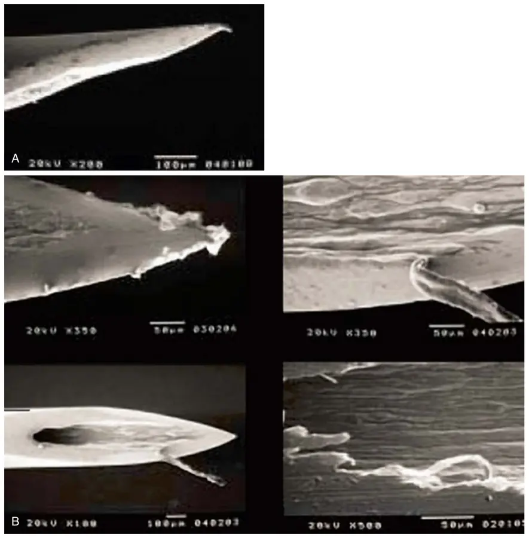
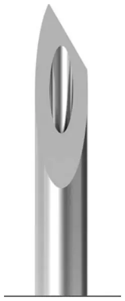

نسخه استخراجشده؛ ترجمه یا تأیید علمی انجام نشده است. وضعیت: captured
خانمی ۵۵ ساله برای جرمگیری عمیق دو کوادرانت بالا، شش تزریق اینفیلتراسیون و کامی با یک سوزن گرفته است. فردا تلفن میزند که جای چند تزریق آخر کوفته و دردناک است. کجای کار را باید تغییر میدادی؟

سوزن دندانپزشکی فولاد ضدزنگ، استریل و یکبارمصرف است و با مراقبت درست کمتر دردسر میسازد. این قاعدهها را همیشه رعایت کن:
تزریق چندباره با یک سوزن در یک جلسه ویژهی دندانپزشکی است؛ برای همین درپوشگذاری دوباره اینجا رایج است و باید ایمن انجام شود. بیشتر فرورفتنهای تصادفی سوزن از بیتوجهی تزریقکننده یا حرکت ناگهانی بیمار است.
سوزن کند ورود را دردناک میکند. سوزن نو و تیز، بیحسی سطحی و کشیدن بافت پیش از ورود جلویش را میگیرند. بول scalpel با نیروی کمتری وارد مخاط میشود و برای اینفیلتراسیون و PDL مناسب است، ولی نه برای بلاکی مثل IANB که سوزن ممکن است مستقیم به عصب بخورد.

خار قلابمانند (barb) روی نوک سوزن بیشتر پس از برخورد پرفشار با استخوان ساخته میشود و هنگام خروج بافت را میکشد. اگر به آن شک داری، بین دو ورود سوزن را عوض کن.
نکتهی طلایی: از ۱۰۵ سوزن شکستهی بررسیشده، ۱۰۰ عدد (حدود ۹۵٪) گیج ۳۰ کوتاه یا اولتراشورت و ۵ عدد گیج ۲۷ کوتاه بودهاند.